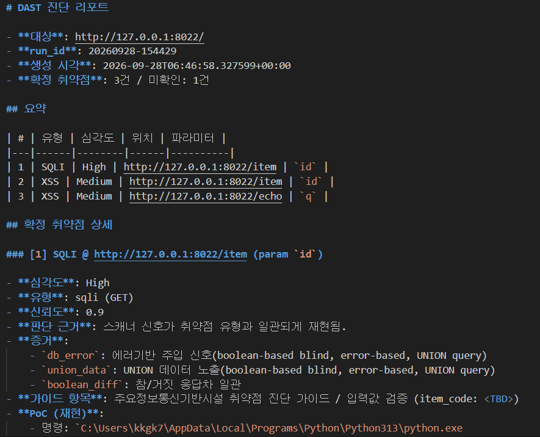

LLM 기반 DAST
SQLI, XSS 자동 진단 하네스
202647009 박근령
진행사항

- 아키텍처 설계 및 프로토타입 개발 중
- 확장성(Extensibility)을 고려한 모듈화 설계로 전환
— SQLi·XSS뿐 아니라 추후 다른 취약점 유형도 모듈 추가만으로 진단 가능하도록 구조 변경
- SQLMAP, DALFOX와 같은 취약점 자동화 진단 도구 설치
- LLM을 뺀 목업(하드코딩) 상태로 간단한 웹페이지 테스트
차주계획
- 실제 기능이 있는 것 테스트
- 요구사항 정의서 자세히 작성
- 설계 문서들 작성